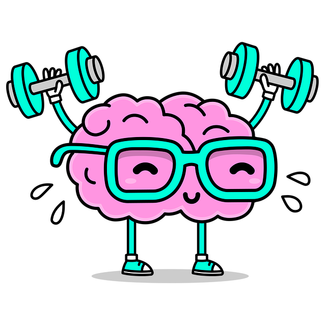
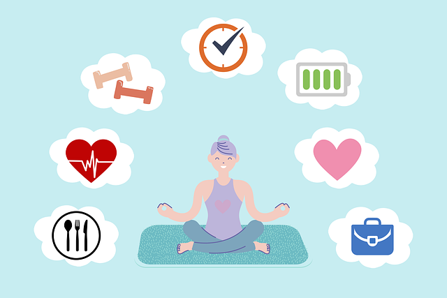

Priorizando el ejercicio y la salud mental
Prioriza el ejercicio y la salud mental para mejorar tu bienestar general. El ejercicio regular reduce el estrés, mejora el estado de ánimo y aumenta la energía. Cuidar la salud mental con técnicas como la meditación y la terapia promueve una mente más equilibrada y resiliente. Combina ambos para una vida más saludable y feliz.
Bases para priorizarla
Apoyo Social, variedad, educación continua, autoevaluación.

Ahi que tener constancia
La constancia en el ejercicio y la salud mental es esencial para maximizar los beneficios y mantener un equilibrio saludable en la vida cotidiana.
